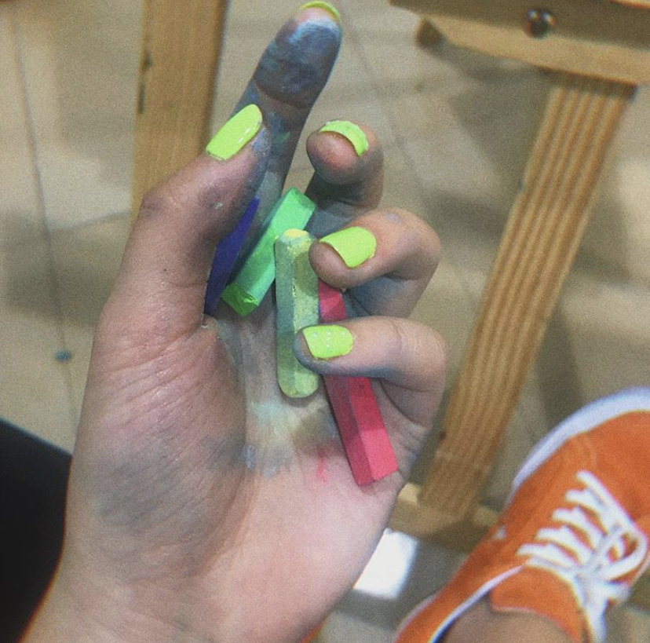

Q6: Do you believe there was a singular moment in your life that led you to a career in desing? Or was it an interest that built up over the years?
A: I have been always showing some talent in art and design since I was a kid so I think studying art is something I should do and I also love it.